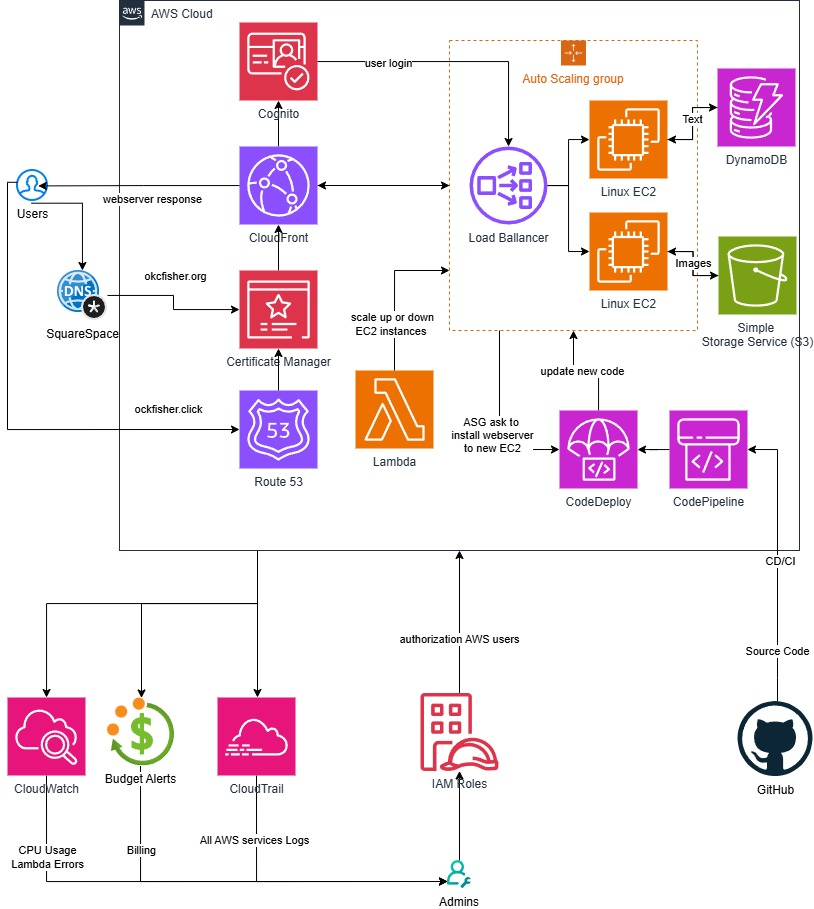

Cloud-Native Web Application
Fish Sharing is a scalable, user-friendly web platform designed to help people share and explore fish-related content in a reliable cloud environment. The project emphasizes high availability, automated deployment, and secure access through modern AWS services.

This project focuses on building a resilient web application architecture that can scale smoothly as demand grows. It demonstrates how to combine frontend delivery, backend hosting, storage, and automation to create a production-style system.